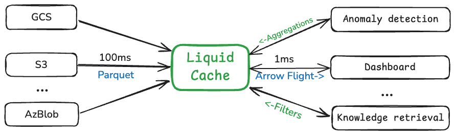

LiquidCache is a new caching infrastructure for the next decade of data analytics.1
1 Check out our research paper (VLDB 2026) for more technical details.
At a glance, LiquidCache is a caching service for object stores that serves diverse analytical applications. Under the hood, LiquidCache is ultra-optimized for compute pushdown, larger‑than‑memory datasets, and network‑efficient data transfer.

It is built on open standards: Parquet for data storage, DataFusion as the query engine, and Arrow Flight for data transfer. This makes LiquidCache highly composable; you can easily integrate it into your existing analytics stack.
This blog post discusses the three critical roles of LiquidCache in next-generation analytics: caching for diskless, state management for serverless, and liquid data for compute pushdown.
Caching for diskless
We like S3
- Simple durability: 11 nines of durability—you never have to worry about data loss.
- Simple scalability: virtually unlimited space and throughput.
But S3 is slow and expensive
- ≈100 ms first‑byte latency plus transfer latency; this quickly adds up when multiple round‑trips are needed to fetch data. 2
- Storage, request, and data‑transfer/egress costs; prices have remained unchanged for a decade even as underlying hardware has become ~20× cheaper.

LiquidCache: foundation of diskless analytics

State management for serverless
We like serverless
- Simple scalability: automatic horizontal scaling and fine‑grained billing.
- Lower cost via higher utilization and elasticity; zero servers to manage.
But serverless analytics are slow and expensive
- S3 is both too slow and too expensive.
- You can’t build a sticky compute‑local cache: serverless compute is one‑shot, ephemeral, and stateless.
LiquidCache: the missing piece for serverless analytics
In practice, most production analytics pin workloads to EC2‑like servers with a compute‑local cache for predictable performance.
With LiquidCache, all compute nodes can be serverless because they can connect to the shared LiquidCache service, which is deployed on conventional EC2 instances.

Liquid data for compute pushdown
We like Parquet
- All major query engines support it (DataFusion, Spark, Trino, DuckDB, Snowflake, BigQuery, and more).
- It is battle‑tested and keeps evolving (e.g., page indexes, new encodings).
- It is under open, stable governance (Apache Software Foundation), so your data is in good hands.
But sometimes we want more aggressive performance
- There are better encodings and compression schemes out there.
- Parquet is critical data infrastructure: it evolves cautiously to keep your data safe and stable—it can’t try new research today and abandon your data tomorrow.
LiquidCache: cache-only, pushdown-optimized data representation
- LiquidCache uses state‑of‑the‑art encodings and compression chosen by the workload. 5
- Liquid data is invisible to the rest of the ecosystem: it is cache‑only. This means it can freely change its layout, adding or removing encodings without breaking any user code.
- LiquidCache transparently, progressively, and selectively transcodes Parquet data to the liquid format.
- Liquid data is designed for efficient pushdown to save both compute and network resources.
5 The liquid format is heavily inspired by Vortex. We plan to support a Vortex backend in the future.
Without any changes to Parquet, LiquidCache takes care of the performance optimizations.

Conclusions
LiquidCache is the one‑stop shop for diskless, serverless, and pushdown‑native analytics.
It is built on open standards (Parquet, Arrow Flight, DataFusion) for easy integration and stable governance.
It optimizes for compute pushdown, larger‑than‑memory datasets, and network‑efficient data transfer.
Who are we?
- LiquidCache started as a research project at UW‑Madison ADSL led by Xiangpeng Hao.
- It was made possible by a research gift from InfluxData. One year later, SpiralDB and Bauplan also joined the journey.6
- LiquidCache will remain a public‑benefit project in appreciation of the support from taxpayers, research gifts, and the open‑source community.
6 Support our research here!